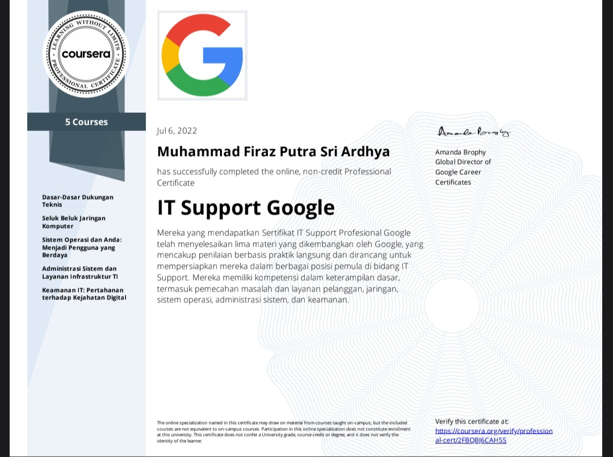

Certification

Sertifikat ini didapat dengan cara mengikuti Praktik Kerja Lapangan yang di selenggarakan oleh sekolah dan pastinya setiap siswa diwajibkan untuk mengikuti PKL, pada tahun 2021

Sertifikat ini didapat dengan cara mengikuti tes sertifikasi profesi yang diuji oleh Badan Nasional Sertifikasi Profesi, yang diselenggarakan di Smk Negeri 1 Cibinong

Sertifikat ini didapat dengan cara mengikuti pelatihan IT Support yang diadakan Oleh Islamic Development Network atau bisa disebut IDN. Dan IDN juga bekerja sama dengan google indonesia